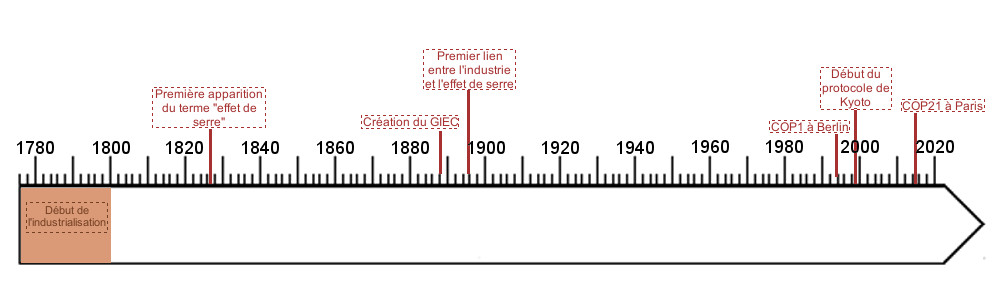

Depuis que la Terre existe, le climat n’a cessé d’évoluer : ères glaciaires… Mais aujourd’hui, on constate une évolution bien trop
rapide pour etre d’origine naturelle, et surtout qui n’est pas sans danger : la vidéo ci-dessous, réalisée par la NASA, nous présente
l’évolution des températures ces dernières années.
Pourtant, la prise de conscience de ce problème est très récente, et malgré les nombreuses conférences sur ce sujet, les pays ne
tiennent pas toujours leurs engagements. La frise ci-dessous retrace les différentes étapes de cette prise de conscience : cliquez
sur la frise pour découvrir les différentes date clés.

1750-1800 : c’est le début de l’ère industrielle, le charbon est très exploité : les premiers gaz à effet de serre sont relâchés dans l’atmosphère, mais leurs effets sont encore imperceptibles.
1827 : Le terme “effet de serre” apparaît pour la première fois, dans un article du physicien Joseph Fourier. Il est le premier à supposer que les gaz de l’atmosphère jouent un rôle dans la régulation de la température terrestre.
1988 : Le GIEC, ou Groupe d’experts Intergouvernemental sur l’Evolution du Climat, est créé. Il réunit des scientifiques, dirigeants, auteurs autour de la question du changement climatique. 7 ans après sa création, le GIEC rendra un rapport pour prouver que les activités humaines ont un fort impact sur le climat.
1896 : Plus de 100 ans après le début du phénomène, le chimiste Svante August Arrhenius fait le lien entre les activités humaines et l’émission de CO2 dans l’atmosphère. Cependant, celui-ci ne perçoit pas encore l’impact négatif que pourrait avoir ce phénomène dans le futur.
1992 : Le Sommet de la Terre a lieu à Rio, il aboutira au plan d’action Agenda 21. Composé de 40 chapitres, et réunit 2500 recommandations pour limiter le changement climatique. L’agenda 21 est ratifié par 50 états.
1995 : La première COP (Conference Of Parties) se tient à Berlin, le concept de quota d’émission de CO2 y est introduit. Ainsi, chaque pays devra surveiller ses émissions carbone.
1997 : Lancement du protocole de Kyoto suis à la COP3 : 38 pays s’engagent à réduire leurs émissions de gaz à effet de serre. L’objectif est de réduire les émissions globales de 5.2% d’ici 2012. Mais le programme ne débute réellement qu’en 2005, et se fera sans les Etats-Unis ni l’Australie, qui sont pourtant responsables de ⅓ des émissions mondiales. Le protocole de Kyoto fut donc un échec.
2009 : Lors de la COP15 à Copenhague, un nouvel accord est signé. Son but est de réagir après l’échec de Kyoto, cependant les conditions de l’accord sont peu contraignantes, et donc peu efficaces.
2014 : Le GIEC publie un nouveau rapport, et estime que pour une hausse des températures de 1 à 2°C, les risques sanitaires sont “considérables”. Pour plus de 4°C, ces risques deviennent “très élevés”.
2015 : La COP21 se tient à Paris : 184 états doivent présenter leur plan d’action pour limiter leur impact sur le climat. Parmi ces pays, la Norvège s’engage à réduire de 40% ses émissions de CO2 d’ici 2030. Les pays en voie de développement consentent à réduire leurs émissions, en échange d’un appui financier international.